Descriptors¶
The descriptors module offers all kinds of acoustics related descriptors.
Descriptors from ISO/TR 25417:2007¶
Descriptors from acoustics.standards.iso_tr_25417_2007.
- descriptors.REFERENCE_PRESSURE = 2e-05¶
- acoustics.descriptors.sound_pressure_level(pressure, reference_pressure=2e-05)¶
Sound pressure level 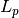 in dB.
Parameters: - pressure – Instantaneous sound pressure
 .
. - reference_pressure – Reference value
 .
.
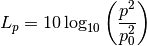
- pressure – Instantaneous sound pressure
- acoustics.descriptors.equivalent_sound_pressure_level(pressure, reference_pressure=2e-05, axis=1)¶
Time-averaged sound pressure level 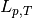 or equivalent-continious sound pressure level 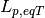 in dB.
Parameters: - pressure – Instantaneous sound pressure .
- reference_pressure – Reference value .
- axis – Axis.
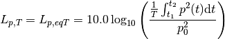
- pressure – Instantaneous sound pressure
- acoustics.descriptors.peak_sound_pressure(pressure, axis=1)¶
Peak sound pressure 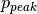 is the greatest absolute sound pressure during a certain time interval.
Parameters: - pressure – Instantaneous sound pressure .
- axis – Axis.
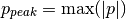
- pressure – Instantaneous sound pressure
- acoustics.descriptors.peak_sound_pressure_level(peak_sound_pressure, reference_pressure=2e-05)¶
Peak sound pressure level 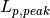 in dB.
Parameters: - peak_sound_pressure – Peak sound pressure .
- reference_pressure – Reference value .
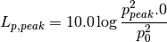
- descriptors.REFERENCE_SOUND_EXPOSURE = 4e-12¶
- acoustics.descriptors.sound_exposure(pressure, axis=1)¶
Sound exposure 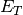.
Parameters: - pressure – Instantaneous sound pressure .
- axis – Axis.
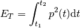
- pressure – Instantaneous sound pressure
- acoustics.descriptors.sound_exposure_level(sound_exposure, reference_sound_exposure=4e-12)¶
Sound exposure level 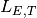 in dB.
Parameters: - sound_exposure – Sound exposure .
- reference_sound_exposure – Reference value

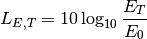
- descriptors.REFERENCE_POWER = 1e-12¶
- acoustics.descriptors.sound_power_level(power, reference_power=1e-12)¶
Sound power level 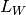.
Parameters: - power – Sound power
 .
. - reference_power – Reference sound power 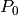.
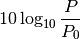
- power – Sound power
- acoustics.descriptors.sound_energy(power, axis=1)¶
Sound energy
 ..
..Parameters: power – Sound power .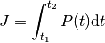
- acoustics.descriptors.sound_energy_level(energy, reference_energy=1e-12)¶
Sound energy level L_{J} in dB.
Parameters: - energy – Sound energy .
- reference_energy – Reference sound energy 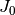.
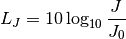
- energy – Sound energy
- descriptors.REFERENCE_ENERGY = 1e-12¶
- acoustics.descriptors.sound_intensity(pressure, velocity)¶
Sound intensity .
Parameters: - pressure – Sound pressure 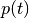.
- velocity – Particle velocity 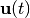.
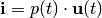
- acoustics.descriptors.time_averaged_sound_intensity(intensity, axis=1)¶
Time-averaged sound intensity 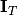.
Parameters: - intensity – Sound intensity .
- axis – Axis.
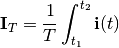
- descriptors.REFERENCE_INTENSITY = 1e-12¶
- acoustics.descriptors.time_averaged_sound_intensity_level(time_averaged_sound_intensity, reference_intensity=1e-12, axis=0)¶
Time-averaged sound intensity level 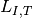.
Parameters: - time_averaged_sound_intensity – Time-averaged sound intensity .
- reference_intensity – Reference sound intensity 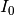.
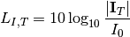
- acoustics.descriptors.normal_time_averaged_sound_intensity(time_averaged_sound_intensity, unit_normal_vector)¶
Normal time-averaged sound intensity 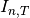.
Parameters: - time_averaged_sound_intensity – Time-averaged sound intensity .
- unit_normal_vector – Unit normal vector .
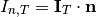
- acoustics.descriptors.normal_time_averaged_sound_intensity_level(normal_time_averaged_sound_intensity, reference_intensity=1e-12)¶
Normal time-averaged sound intensity level 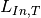 in dB.
Parameters: - normal_time_averaged_sound_intensity – Normal time-averaged sound intensity 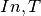.
- reference_intensity – Reference sound intensity .
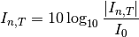
Other descriptors¶
- acoustics.descriptors.lden(lday, levening, lnight)[source]¶
Calculate 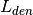 from 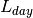, 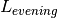 and 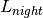.
Parameters: - lday – Equivalent level during day period .
- levening – Equivalent level during evening period .
- lnight – Equivalent level during night period .
Returns:
- acoustics.descriptors.ldn(lday, lnight)[source]¶
Calculate 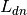 from and .
Parameters: - lday – Equivalent level during day period .
- lnight – Equivalent level during night period .
Returns:
- acoustics.descriptors.leq(levels, int_time=1.0)[source]¶
Equivalent level 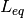.
Parameters: - levels – Levels as function of time.
- int_time – Integration time. Default value is 1.0 second.
Returns: Equivalent level L_{eq}.
Sum of levels in dB.
 and reference power 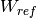.
and reference power 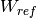.